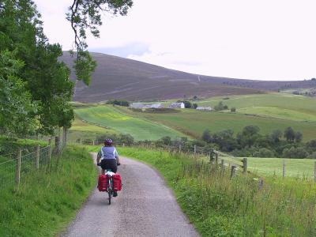

Lots of pics of this day of the tour are here.previous day next dayIt rained overnight and the air felt damp, but the rain had cleared off by the time we got up and had breakfast. The landlord cheered us up by telling us that the place we were going to that night, Tomintoul, claimed to be the highest village in Scotland.
Setting out, it was fairly warm, so I just wore a T-shirt and shorts. We stopped at a garden centre for tea after about 15 miles.
 me on tiny road Lunch was in Dufftown. It had gotten sunny, and we sat outside on a picnic bench at the town center. A couple already at the bench made room for us. The man, who was very talkative, worked on one of the inter-island ferries. He pointed out his "little friend", a small brown and white cocker spaniel and said that someone had left her behind on the ferry, and he had adopted her. He said that he never used to walk at all, but now that he's got the dog, he walks with her for mies and miles. As he was a bit portly, I thought that she was doing as much good for him as he was for her.
The road from Dufftown to Tomintoul was one long, reasonably straight B- road. We could have joined it straight out of Dufftown, but Neil had noted a tiny road that ran parallel to it for a bit before joining up with it. We took that, and found ourselves riding on an extremely narrow road through some pretty scenery. It was very hilly, and despite the attractive surroundings, we weren't sure it was a worthwhile detour.
The B-road was smooth and far less hilly. There were very few cars. There was a headwind, not very strong, but steady and relentless, so you had to keep pedaling on the downhills. The sun was shining and the scenery was fabulous (green fields with hillls in the background) so I just shifted down and pedalled and looked around me. Simon had attached himself to the back wheels of Sue and Neil and was way ahead of me. Sue and Neil stopped at a junction to regroup. Simon went ahead to set up his camera to get photos. When we set off I tried to ride behind Greta (a very fit lady in her late 60s), but staying with her on the (not very steep) uphills was too hard and I dropped back. Not too long after that Simon, whom I'd ridden by when I was still sticking with Greta, caught up to me, and we rode the rest of the way together into Tomintoul, which at about 370m isn't all that high up (last summer I stayed in Beckenridge Co which is about 3000m high). We were all very tired from batteling the headwind.
We checked into our B&B, had a bath, washed clothes, and had dinner at a local hotel. Then it was about time to sleep.
50 miles done today.